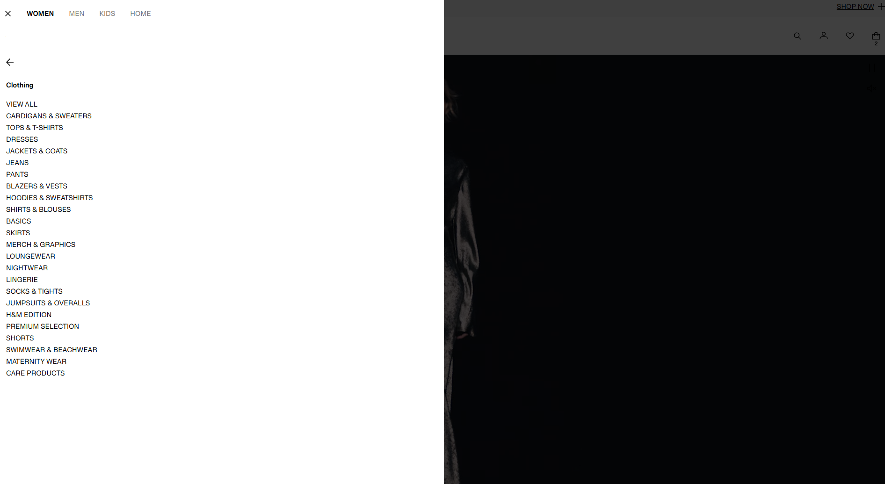
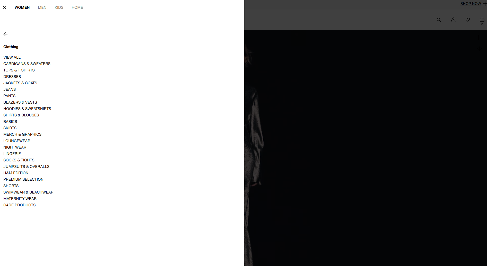
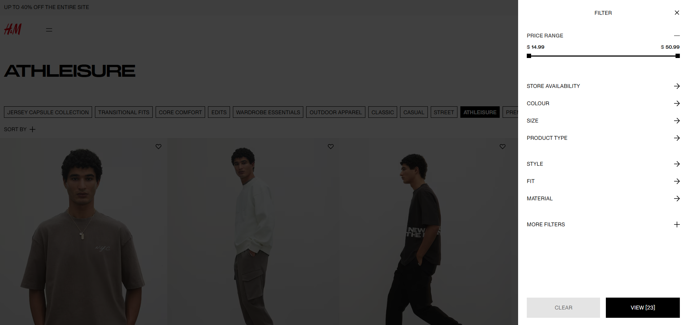
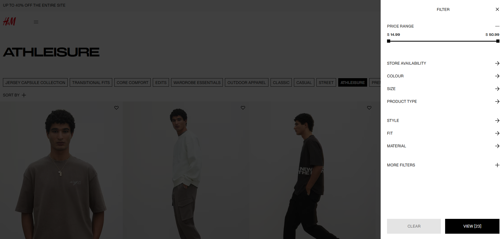
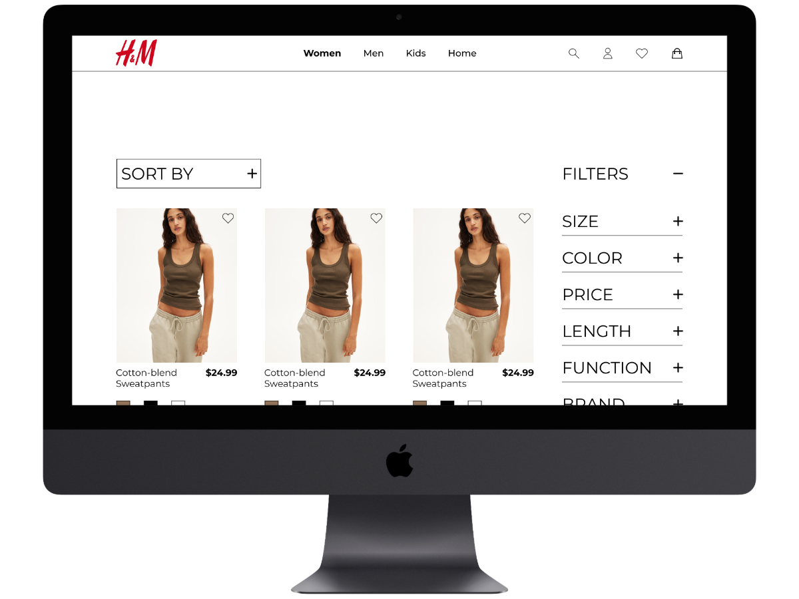
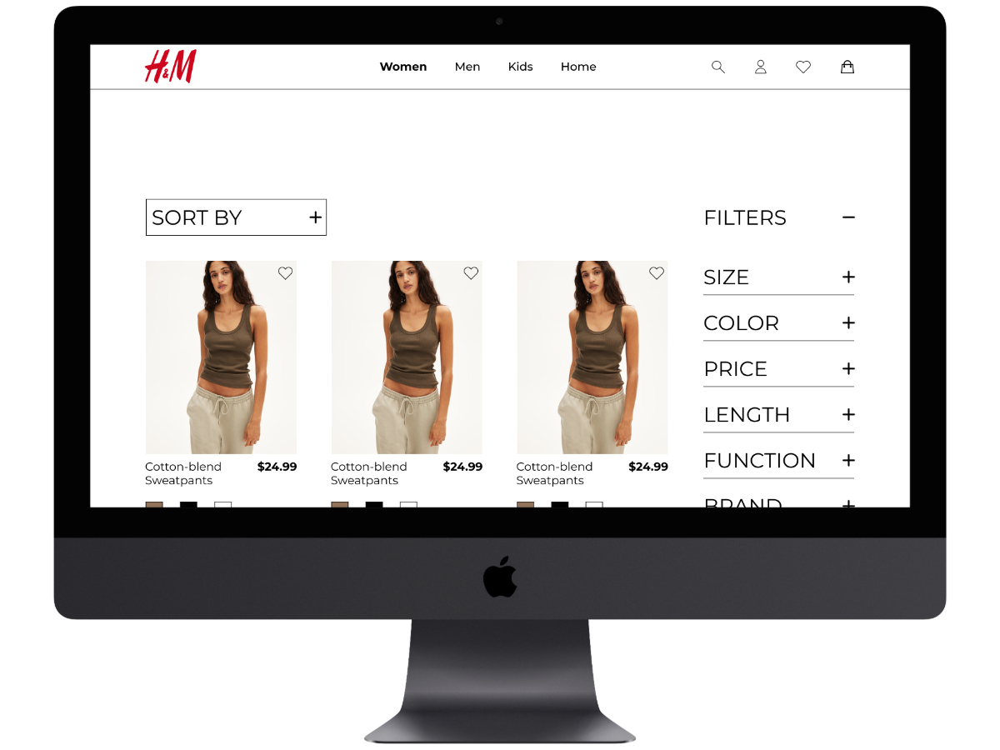

Research1
I started looking at H&M and other similar brands to see what I can use for inspiration or get rid of. I really like how organized Ricki’s navigation is for their clothing because it helps the user have an easier time finding the certain type of clothing that they want to take a look at.
 

Research2
I also liked how Ricki’s had the filter options right next to the clothing so that you aren't required to go to a different type of page because it takes up more of your time to open the filter and then close it if you want to continue to scroll through the clothing.
 

User Persona
My target audience consists of busy young adults who prioritize efficiency. To represent them, I created Gloria Allen, a career-driven individual with limited time for shopping. She prefers a fast, seamless online experience, which is where the H&M redesign comes in—to streamline her shopping process and make transactions quick and hassle-free.

User Flow1
I created my version of the H&M User Flow and saw some issues with the old one. For example, the drop-down clothing menu required you to do 2 actions to get to the result which is kind of weird when you go to a clothing menu you expect the clothing options to be immediately there.

User Flow2
For the filters for H&M you need to go to a different type of page in order to access the filter section, but for my user flow I decided to get rid of that extra page and make the filter section easily accessible to you, even as you are scrolling through the clothing.

User Flow3
Also, when it comes to purchasing something on the clothing page, there was no option to immediately buy something right now, you could only add something to your bag which would take time to load and then you could go to the checkout. In my version, you can do both of those things, you can add something to your bag if you are not interested in buying, but you can also buy something right now without wasting your time.


Final Result
I completed the final prototype and accomplished what I set out to do, which was to make the site more efficient and simpler to use. Below is the link to the desktop version and also the H&M user flow and my version of the H&M user flow.
 

Desktop:
https://www.figma.com/proto/4zLNiVGslLyIjHZojHsIOE/H%26M-Prototype?node-id=223-2228&node-type=frame&t=jWmjT9yA71DISVUV-1&scaling=min-zoom&content-scaling=fixed&page-id=1%3A2&starting-point-node-id=223%3A2228
H&M's User Flow:
https://www.figma.com/board/VB4kXokAzgQzvXX2szW2XW/H%26M-user-flow?node-id=0-1&t=GWMzubpEBg5CC0Pv-1
My User Flow:
https://www.figma.com/board/c933z4vM1pre5v8nFogMH0/Oosman's-H%26M-user-flow?node-id=0-1&t=yKQOOx13ZmimrOzv-1